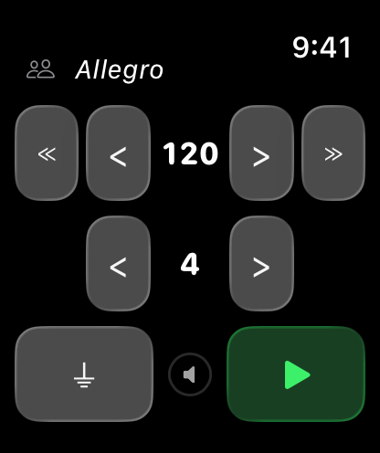
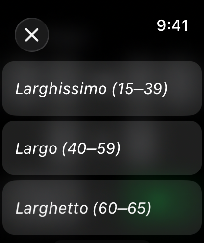
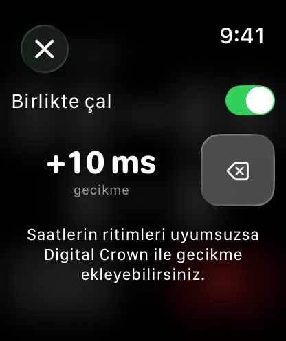

Metronom Watch Special
Apple Watch için yalın ve hassas bir metronom. Tempoyu 15 ile 240 BPM arasında dilediğiniz gibi ayarlayın ya da Larghissimo'dan Prestissimo'ya uzanan hazır ayarlardan birini seçin. Ölçü başına 1–9 vuruş seçebilirsiniz; ilk vuruş kendiliğinden vurgulanır. Ses, titreşim veya ikisini birlikte kullanın, ses düzeyini Digital Crown ile ayarlayın. Müzik çalışmasının yanı sıra kürek çekme temposu, koşu ve yürüyüş adım sıklığı gibi ritme dayalı sporlar için de idealdir. Kolunuz aşağıdayken de çalmayı sürdürür, son ayarlarınızı hatırlar ve iPhone gerektirmez.
watchOS 8 veya sonrası gerekir.
İndir


Destek
Bir sorunuz mu var, hata mı buldunuz, ya da uygulamayla ilgili yardıma mı ihtiyacınız var? Bize yazın. Gelen her mesajı okuyoruz.
Yazmadan önce
Önce şunları denemeniz sorunu çözebilir:
- Uygulama yanıt vermiyor mu? Digital Crown'a iki kez basıp açık uygulamaları görün, ardından Metronom kartını yukarı kaydırıp kapatın. Uygulama listenizden yeniden açın.
- Ses çıkmıyor mu? Digital Crown ile ses düzeyinin açık olduğunu kontrol edin. Saatinizin sessiz modda olmadığından da emin olun.
- Titreşim çalışmıyor mu? ⏚ düğmesinin göründüğünden emin olun; bu, titreşimin açık olduğu anlamına gelir. ⚡︎ görüyorsanız dokunarak titreşimi açın. Saat Ayarları → Sesler ve Titreşim bölümünü de kontrol edin.
- Metronom kayıyor ya da duruyor mu? Arka planda ses çalabilmesi için uygulamanın etkin kalması gerekir. Uygulamayı yeniden açıp metronomu tekrar başlatmayı deneyin.
Sıkça Sorulan Sorular
- iPhone olmadan çalışır mı?
Evet, tamamen bağımsız çalışır. - Kolum aşağıdayken çalışır mı?
Evet, ses ve titreşim kesilmeden sürer. - Ayarlarımı hatırlıyor mu?
Evet. Son tempo, ölçü başına vuruş sayısı ve titreşim ayarınız, uygulamayı yeniden açtığınızda geri yüklenir. - Spor için kullanabilir miyim?
Evet. 15 BPM'den başlayan yavaş tempolar kürek çekme temposu için, yüksek tempolar ise koşu ve yürüyüş adım sıklığı için uygundur. - Herhangi bir veri topluyor mu?
Hayır. Hiçbir veri toplanmıyor veya paylaşılmıyor. - ⏚ düğmesi ne yapar?
Titreşimin açık olduğunu gösterir. Kapatmak için dokunun. - ⚡︎ düğmesi ne yapar?
Titreşimin kapalı olduğunu gösterir. Açmak için dokunun. - Yalnızca ses ya da yalnızca titreşim kullanabilir miyim?
Evet. Yalnızca titreşim için ses düzeyini kısın, yalnızca ses için titreşimi kapatın. - Aynı anda iki ses varmış gibi duyuluyor. Bu normal mi?
Apple Watch sessiz modda değilse, titreşim motoru uygulamanın vuruş sesiyle birlikte duyulabilen bir tık çıkarabilir. Yalnızca uygulamanın sesini duymak için saatinizi sessiz moda alın.
Kullanım



Nasıl kullanılır
- BPM'i < > ve ≪ ≫ düğmeleriyle ayarlayın
- Hazır ayarlar listesinden seçmek için tempo adına (örneğin "Allegro") dokunun
- Ölçü başına vuruş sayısını ikinci satırdaki < > düğmeleriyle ayarlayın
- Titreşimi ⏚ düğmesiyle (dokununca kapanır) veya ⚡︎ düğmesiyle (dokununca açılır) değiştirin
- Ses düzeyini Digital Crown ile ayarlayın
- Başlatmak için yeşil oynat düğmesine, sıfırlamak için kırmızı durdur düğmesine basın
Birlikte çalmak
Sol üstteki insan simgesine dokunun ve Birlikte çal anahtarını açın. Vuruşlar artık oynat düğmesine bastığınız andan değil, sistem saatinden türetilir; böylece aynı tempoya ve aynı ölçü vuruşuna ayarlı Apple Watch'lar aynı vuruşlara denk gelir. Eşleştirme yok, ağ bağlantısı yok, kurulum yok; herkes yalnızca aynı tempoyu seçer.
Açıkken çalma hemen değil, sonraki vuruşta başlar. Olağan tempolarda bu bir saniyenin altındadır; bir vuruşun dört saniye sürdüğü 15 BPM'de ise dört saniyeye kadar çıkabilir.
Saatiniz diğerleriyle uyumsuz duyuluyorsa aynı ekranda Digital Crown'u çevirerek gecikmeyi milisaniye olarak artırıp azaltabilir, ⌫ düğmesiyle sıfıra döndürebilirsiniz. Gecikme her ses çıkışı için ayrı saklanır; hoparlör ayarınız ile Bluetooth ayarınız birbirinin üzerine yazılmaz.
Tempo Tablosu
| Tempo | BPM Aralığı | Karakteri |
|---|---|---|
| Larghissimo | 15 – 39 | Son derece yavaş |
| Largo | 40 – 59 | Çok yavaş, geniş |
| Larghetto | 60 – 65 | Oldukça yavaş |
| Adagio | 66 – 75 | Yavaş ve ağırbaşlı |
| Andante | 76 – 99 | Yürüyüş temposu |
| Andantino | 100 – 109 | Andante'den biraz hızlı |
| Moderato | 110 – 119 | Orta hızda |
| Allegro | 120 – 167 | Hızlı ve canlı |
| Presto | 168 – 199 | Çok hızlı |
| Prestissimo | 200 – 240 | Son derece hızlı |
Yasal
Gizlilik Politikası
Son Güncelleme: Temmuz 2026
Giriş
Metronom Watch Special'a hoş geldiniz. Gizliliğinize saygı göstermeyi ve onu korumayı taahhüt ediyoruz. Bu Gizlilik Politikası, topladığımız, bu durumda toplamadığımız bilgi türlerini ve gizliliğinizi sağlamak için kullandığımız yöntemleri açıklar.
Toplamadığımız Bilgiler
Metronom Watch Special, sıfır veri toplama ilkesiyle tasarlanmıştır. Kullanıcılarımızdan hiçbir kişisel veriyi toplamıyor, saklamıyor, kullanmıyor, paylaşmıyor veya aktarmıyoruz. Uygulama tümüyle Apple Watch'unuzda çalışır; hiçbir sunucuda veri işlenmez veya saklanmaz.
Metronom tercihleriniz, uygulama yeniden açıldığında geri yüklenebilmesi için yalnızca Apple Watch'unuzda saklanır.
Üçüncü Taraf Hizmetleri
Metronom Watch Special; analiz araçları, reklam ağları veya sosyal medya platformları gibi hiçbir üçüncü taraf hizmetiyle bütünleşmez. Hiçbir üçüncü tarafla veri paylaşılmaz.
Çocukların Gizliliği
Hiçbir veri toplamadığımız için, Çocukların Çevrimiçi Gizliliğini Koruma Yasası (COPPA) gibi çocukların gizliliğine ilişkin tüm ilgili düzenlemelere uyuyoruz.
Bu Politikadaki Değişiklikler
Gizlilik Politikamızı zaman zaman güncelleyebiliriz. Değişiklikler için bu sayfayı düzenli olarak gözden geçirmenizi öneririz. Değişiklikler, bu sayfada yayımlandığı anda geçerli olur.
Bize Ulaşın
Gizlilik Politikamızla ilgili soru veya önerileriniz varsa bize çekinmeden yazın: support [at] hoshinosoftware [dot] com